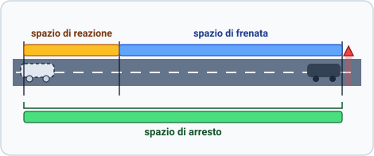
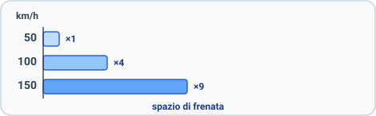

What this topic is about
The safe following distance is the gap you keep from the vehicle ahead so you can stop in time if it brakes suddenly. It is not a fixed number, and it must be respected at every speed. You are responsible for the distance in front of you. That said, an aggressive driver who tailgates you endangers both of you: when it is safe, look for a chance to let them pass, and in the meantime keep an even larger gap from the vehicle ahead, so a sudden stop is less likely to leave you crushed between the two.
What it is for
- Keeping the safe distance is what avoids a collision with the vehicle ahead: its purpose is to stop you rear-ending it.
- It is not there to prevent a head-on collision or a side impact.
- It must be large enough to let you stop the vehicle in time if danger appears.
- It is not a fixed distance.
- It applies at every speed: there is no speed below which it may be ignored and none above which it begins.
- On an extra-urban road it is not a set figure such as 70 m.
- It applies to every vehicle, not only to motor quadricycles.
How the exam phrases it. According to the answers to the Ministry's exam questions, you are not required to check whether the vehicle behind keeps its distance, and your safe distance does not depend on vehicles following you. That is bad driving advice, but it is the answer you must give. On the road, watch your mirrors. If a vehicle follows you too closely, do not exceed the speed limit. You are within your rights to drive a little slower if you are worried that they are following too closely. Do not brake suddenly. Slow down a little, which widens the gap to the vehicle ahead, so that if the vehicle behind hits you the impact is lighter and does not push you into the vehicle ahead. Then let the vehicle behind pass as soon as it safely can.
What the distance depends on, and what it does not
Increase the gap for anything that raises your speed, lengthens your stopping, or slows your reaction.
What it depends on
- It depends on your own speed.
- It depends on the speed of the vehicle ahead.
- It depends on your quickness of reflexes.
- It depends on your psychophysical condition, such as fatigue, alcohol, or distraction.
- It depends on your state of health.
- It depends on your attention and concentration while driving.
- It depends on the traffic conditions.
- It depends on the weather, such as rain, fog, or ice.
- It depends on the road's gradient and layout (its andamento planoaltimetrico: the ups, downs and curves). A downhill grade needs more.
- It depends on the type of vehicle you are driving.
- It depends on the vehicle's state of efficiency.
- It depends on the brake efficiency.
- It depends on the tire condition and grip.
- It depends on the load carried.
What it does not depend on
- It does not depend on the engine's fuel type (gasoline, diesel, LPG).
- It does not depend on the engine's displacement or power, yours or the vehicle's ahead.
- It does not depend on the width of the road or the number of lanes.
- It does not depend on the width or size of either vehicle, or on the type of vehicle behind you.
- It does not depend on the gear engaged or the number of gears.
- It does not depend on the number of wheels.
- It does not depend on the power steering.
- It does not depend on the parking brake or its efficiency.
- It does not depend on any speed limit shown on the back of the vehicle ahead.
Three distances: reaction, braking, and total stopping
Reading a danger and coming to a stop breaks into three distances, and they must be kept separate. Mixing them up is the most common mistake here.
- The reaction distance (spazio percorso nel tempo di reazione) is what you travel from perceiving the danger to the moment braking begins.
- It is roughly the distance covered in one second, and it grows with your speed and your reaction time: fatigue, alcohol, drugs, and distraction stretch it, quick reflexes shorten it.
- The braking distance (spazio di frenatura) is the further distance from the start of braking to the standstill.
- The total stopping distance (spazio totale di arresto) is the reaction distance plus the braking distance.
- The definition is exact: total stopping distance is not the reaction distance alone, and not the braking distance alone.

The spazio di reazione runs from perceiving the hazard to the moment the brakes bite, the spazio di frenata from there to a standstill, and the spazio di arresto is both together. It is longer than either part, which is what makes the third term worth a name of its own.
How braking distance behaves
- Braking distance grows with the square of speed, so it is anything but independent of speed.
- Double your speed and it quadruples, not doubles.
- Triple your speed and it is nine times longer.
- Quadruple your speed and it is sixteen times longer.
- It lengthens when grip between tire and asphalt is low.
- It lengthens on a snowy road.
- It lengthens on a wet road.
- It lengthens downhill, including the far side of a crest, and shortens uphill.
- It lengthens when the wheels lock.
- Quick reflexes shorten the reaction distance, not the braking distance.

How total stopping distance behaves
- Total stopping distance grows with speed and shrinks as speed drops.
- It depends on tire wear: worn tires lengthen it, sound tires do not.
- It depends on the state of the asphalt.
- It lengthens on a snow-covered road.
- It lengthens on a road covered in mud.
- Rough asphalt grips better and shortens it.
The safe following distance is your reaction distance
- This is the central rule of the topic: the minimum safe following distance equals your reaction distance, the meters you cover in about one second.
- It may be more than the reaction distance, but never less.
- It is not the braking distance, neither equal to it nor "at least" it, and not the braking distance plus a fixed 20 m.
- It is not the visibility distance.
Why only the reaction part, and not the whole stopping distance? Because the car ahead is also braking, using up its own braking distance to come to rest. You only have to cover the gap your reaction lag opens. That is exactly why the numbers below are the one-second (reaction) values, not the much larger total-stopping figures.
When to increase the gap
- Add distance when driving in a line of traffic, to avoid chain rear-end collisions.
- Keep it in dense traffic too.
- Add distance behind a vehicle carrying a protruding, unstable load.
- Add distance whenever the driver ahead is hard to predict.
- Keep it even just before starting a pass.
- Keep it on the autostrada: sudden braking is always possible there.
- Never reduce it in a tunnel.
- Never reduce it behind a truck: you cannot see past it, and its longer braking distance is no reason to close up.
- Never reduce it on an emergency lane, and a lane that is not for driving has no distance rule of its own.
- Rain, snow and steep descents call for more distance, but no fixed figure such as 100 m.
The numbers (your reaction distance is the minimum safe distance)
These are the reaction-distance figures (the meters covered in one second) and therefore the minimum safe following distance. They are approximate values. An easy rule gets close to every one of them: divide your speed in km/h by 10 and multiply by 3. The rule is not exact (it gives 45 m at 150 km/h where the official figure is 42), but it lands near enough to tell a true figure from a false one, since the false figures are far smaller:
safe distance ≈ (speed ÷ 10) × 3
- 30 km/h (19 mph) gives about 9 m (9.8 yd).
- 50 km/h (31 mph) gives about 14 m (15 yd).
- 100 km/h (62 mph) gives about 28 m (31 yd).
- 130 km/h (81 mph) gives about 36 m (39 yd).
- 150 km/h (93 mph) gives about 42 m (46 yd).
Heads-up for US drivers. The Italian minimum is built on a one-second gap, so the numbers look small to American eyes. In the US, the National Safety Council teaches the three-second rule (add a second in rain, at night, or in a bigger vehicle), roughly three times the Italian figure. The one-second values above are that minimum. On the actual road, keep the larger US gap: it is always allowed, since the safe distance is a minimum, not a maximum.
Specific distances to memorize
- Keep at least 20 m (22 yd) from a snowplow that is working.
- Keep at least 20 m (22 yd) from a salt-spreader or gravel spreader that is working.
- The 20 m rule binds vehicles coming the other way too, and they must stop if that is what it takes not to hinder the work.
- On an extra-urban road with one lane per direction, trucks over 3.5 t that are subject to a mutual no-passing rule must stay at least 100 m (110 yd) apart.
Distraction lengthens everything
- Anything that delays your reaction stretches the reaction distance, and a distracted driver causes crashes.
- Switching on or using a phone is a distraction.
- Lighting a cigarette is a distraction.
- Reaching for the radio or other electronic controls is a distraction.
- A lapse of even a few seconds is dangerous. At 100 km/h (62 mph), a "quick glance" of one second is about 28 m (31 yd) driven blind.
Practice it: the Brakefast simulator
This chapter's distances are hard to feel from a page. A companion driving simulator, Brakefast, is built around them. You drive behind traffic you cannot pass, managing gas and brake, with a following car visible in your rearview mirror. When the car ahead brakes, your reaction time is measured live, and the replay lays your reaction distance and braking distance out on the road, the same two distances defined above. You choose the gap the car behind you keeps (a one-second tailgater or a three-second follower) and the surface (dry, wet, icy), and see directly why one second is a true minimum, and how every distance grows with speed. It opens in a separate browser window and speaks both English and Italian.
Summary of key points
- Safe distance exists to keep you from rear-ending the vehicle ahead. It is not fixed and applies at every speed.
- It depends on speed, reaction time, condition, weather, gradient, load, brakes, and tires. It does not depend on engine size or power, road or vehicle width, lanes, or gear.
- There are three separate distances: the reaction distance (about one second), the braking distance, and the total stopping distance, which is reaction plus braking. Total stopping is neither part on its own.
- Braking distance grows with the square of speed, so doubling the speed gives four times the distance. Reflexes shorten reaction, not braking.
- The minimum safe following distance is your reaction distance, which is the one-second figure: about 9 m at 30 km/h, 14 m at 50, 28 m at 100, 36 m at 130, and 42 m at 150. You only cover your reaction gap because the car ahead is also braking; the bigger total-stopping distance is a different quantity.
- Remember 20 m from a working snowplow or spreader, and 100 m between heavy trucks under a mutual no-passing rule.
- Increase the gap in a line of traffic, in tunnels, and behind trucks or unstable loads, and keep it on the autostrada and before a pass.
- Distraction lengthens reaction distance. Even a one-second glance covers a lot of ground.